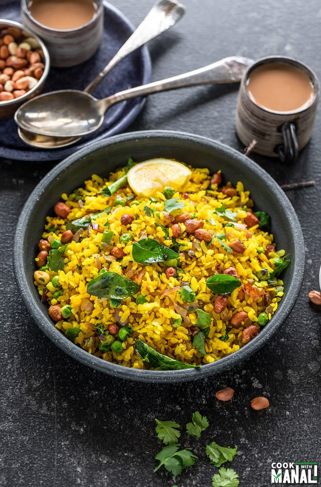

Poha

Description
Poha is a very ligh dish and is made from processed rice. It is generally eaten in the breakfast and
it's very healthy.
It's served along with tea or coffee and is besed served with bhujiya and fried peanuts.
Ingredients
- Raw Poha
- Olive oil
- Onion
- Bhujiya
- Garam Masala
- Fried peanuts
Steps
- Fry onions in olive oil.
- Add garam masala in the onion.
- Make the poha a little wet.
- Now add the poha to the fried onions.
- Serve the poha with bhujiya and fried peanuts.